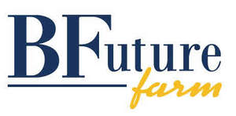

Trade Mark Journal No.2025/013 28 March 2025
UK00004165226 25 February 2025 (31,35,36,37,39,40,41,42,44)

- Class 31
- Raw and unprocessed agricultural, aquacultural, horticultural and forestry products; raw and unprocessed grains and seeds; fresh fruits and vegetables, garden herbs, fresh; natural plants and flowers; bulbs, seedlings and seeds for planting; live animals; foodstuffs and beverages for animals; malt.
- Class 35
- Business consulting services in the agriculture field; Retail and wholesale services, online retail store services, mail order retail services related to foodstuffs, alcoholic beverages and non-alcoholic beverages; retail and wholesale services, online retail store services, mail order retail services related to agricultural products and agriculture, animal breeding, horticulture, forestry and aquaculture equipment. .
- Class 36
- Rental of farms; management and leasing of land for agricultural use; acquisition services of land for agriculture and of farms to be rented; financial sponsorship.
- Class 37
- Infrastructure construction; residential, school, healthcare, commercial and institutional building construction; construction of buildings and structures for agriculture, horticulture, forestry, animal breeding and aquaculture purposes; civil engineering relating to agricultural land.
- Class 39
- Storage and transport of farm products; rental of cycles; arranging of excursions, day trips and sightseeing tours; distribution of energy. .
- Class 40
- Flour milling; cereal drying; cereal processing.
- Class 41
- Education; providing of training; training services relating to agriculture, horticulture, forestry, animal breeding and aquaculture; instruction services relating to farms; transfer of business knowledge and know-how [training].
- Class 42
- Agricultural and horticultural research; testing on agriculture; inspection of agriculture; research of livestock breeding; testing on livestock breeding; inspection of livestock breeding; design of residential, school, sanitary, commercial and institutional buildings; design of buildings and structures for agriculture, horticulture, forestry, animal breeding and aquaculture purposes; researches in the field of cultivation in agriculture.
- Class 44
- Agriculture, aquaculture, horticulture and forestry services; information and advice in relation to agriculture, aquaculture, horticulture and forestry services; rental of agricultural machines and farming equipment; farming (animals); information and advice in relation to animal breeding; veterinary services; hygienic care for animals.
BF International Best Fields Best Food Limited
Representative: Withers LLP